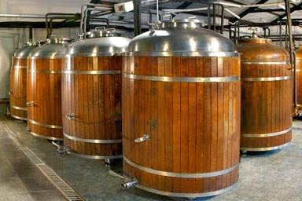
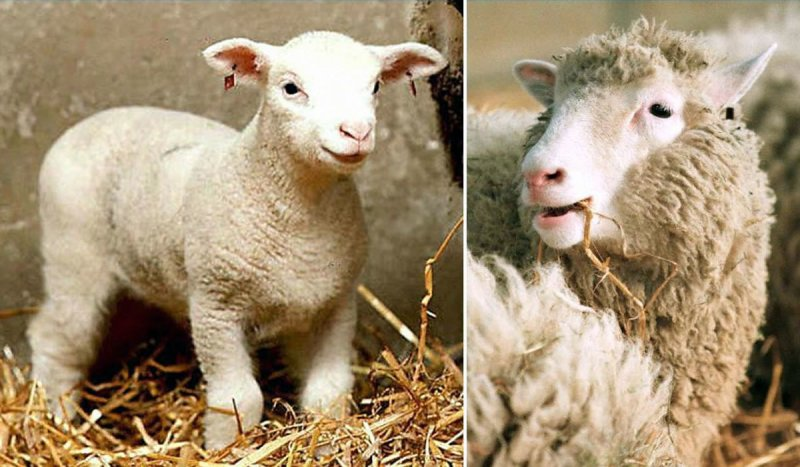
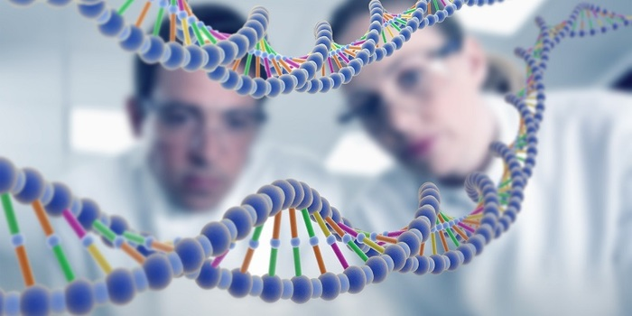
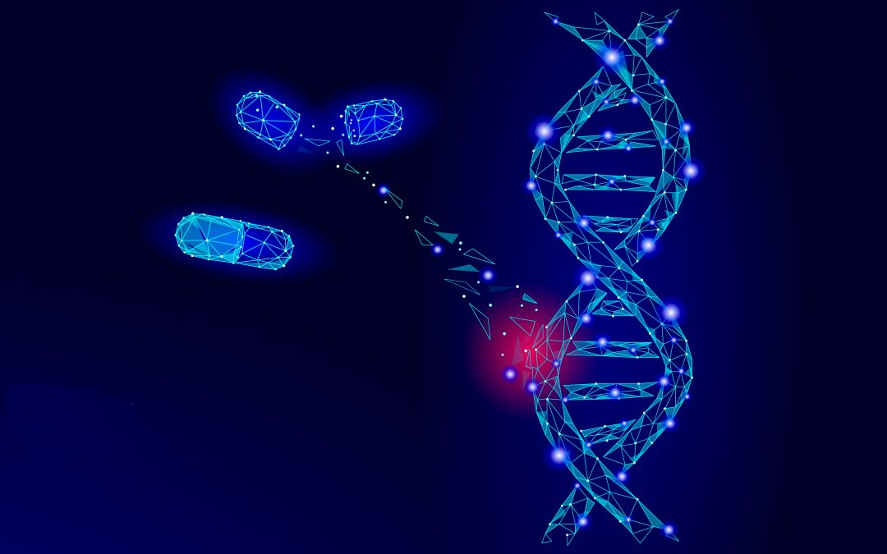
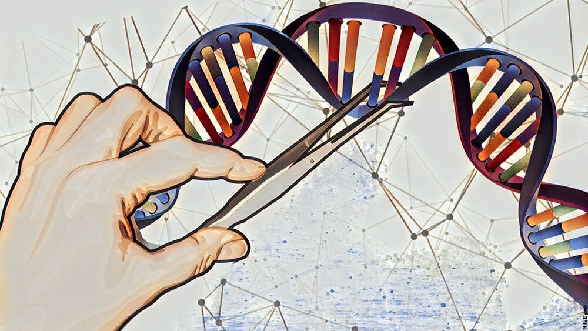
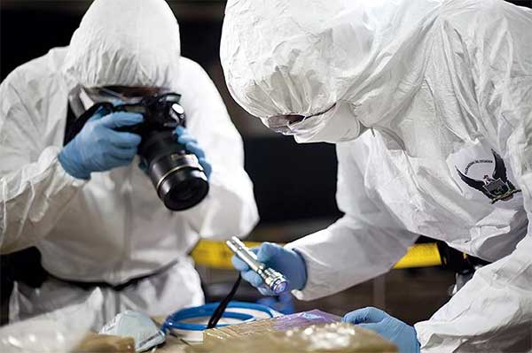

Entre las principales aplicaciones o ejemplos podemos mencionar algunas que ya son conocidas por gran parte de la sociedad.
entre los aportes de la biotecnología en este sentido podemos mencionar la creación de la penicilina descubierta en 1928 y utilizada desde 1941 para el tratamiento de infecciones.
la fermentación es un proceso utilizado para la fabricación de numerosos productos, entre los que podemos destacar la producción de queso, vino, cerveza, pan y otros alimentos.
La clonación consiste en hacer copias idénticas de un organismo, célula o secuencia de ADN. La clonación molecular (de ADN) es un proceso que usan los científicos para amplificar una secuencia concreta de ADN (es decir, obtener muchas copias de ella). Para hacerlo, primero se aísla la secuencia diana; después se inserta este fragmento dentro de otra molécula de ADN (conocida con el nombre de 'vector') y, finalmente, se introduce en una célula huésped adecuada. Cada vez que esta célula huésped se divide, se replica también la secuencia de ADN foráneo insertado, como si fuera una parte más de su propio ADN. También hablamos de clonación para referirnos a la reproducción asexual.
las aplicaciones que utilizan el reconocimiento de ADN son numerosas, podemos citar la criminología forense y las pruebas de paternidad como desarrollos importantes de esta herramienta para la sociedad.
El análisis genético implica examinar el ADN, la base de datos química que contiene instrucciones para el funcionamiento del cuerpo. El análisis genético puede revelar cambios (mutaciones) en los genes que pueden ocasionar enfermedades y afecciones.
Si bien el análisis genético puede aportar información importante para el diagnóstico, tratamiento y prevención de enfermedades, existen restricciones. Por ejemplo, si eres una persona saludable, un resultado positivo de un análisis genético no siempre indica que tendrás una enfermedad. Por otro lado, en algunas situaciones, un resultado negativo no garantiza que no tendrás un determinado trastorno.
A pesar de que todavía está en su infancia, tiene un gran potencial para el futuro. En lugar de bombear medicamentos con efectos secundarios graves a un paciente, la terapia génica introduce ADN genéticamente modificado en la célula del paciente. Además, hay ciertas enfermedades como la degeneración macular donde no hay cura. En esos casos, los científicos han introducido el gen que invierte la degeneración utilizando el virus del resfriado común como canal de transmisión.
Las vacunas son aquellas preparaciones (producidas con toxoides, bacterias, virus atenuados, muertos o realizadas por ingeniería genética y otras tecnologías que se administran a las personas para generar inmunidad activa y duradera contra una enfermedad estimulando la producción de defensas. También existe otro tipo de protección generada a partir de gamaglobulinas, que producen inmunidad inmediata y transitoria a través de la aplicación directa de anticuerpos.
El mejoramiento genético es la ciencia de incrementar la productividad, la resistencia al medio ambiente y a las enfermedades presentes en el mismo, generando una mejor adaptación de las especies animales y vegetales domésticas o la belleza y calidad de sus productos, por medio de modificaciones del genotipo (la constitución genética) de los individuos. Se puede entender también como una disciplina que gestiona recursos genéticos de especies con interés económico actual o potencial mediante selección y mejora de caracteres deseados, con la finalidad de incrementar y estabilizar mayores niveles productivos y de adaptabilidad en un grupo de la descendencia y, a la vez, asegurar la conservación a largo plazo de la variabilidad genética poblacional existente y su biodiversidad. No solo se basa en las cosas negativas, algunos mejoramientos que brindan los alimentos genéticamente modificados van desde mayor cantidad de alimento con poca mano de obra como la resistencia a algunos químicos y plagas.
El análisis de ADN o la toma de huellas dactilares de ADN ha hecho que sea increíblemente fácil determinar la cuestión de la paternidad y ha ayudado a resolver muchos delitos. El ADN de cada persona contiene un patrón específico que se utiliza para identificar su ADN. Los productos biotecnológicos de hoy en día se han vuelto tan sofisticados que pueden incluso hacer perfiles de ADN incluso a partir de 1 ng de muestras.
